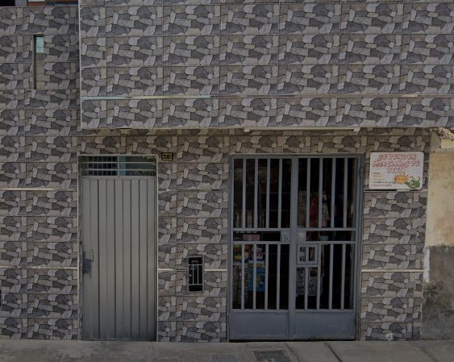
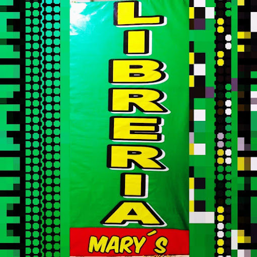

Ya sea que estés comenzando un nuevo año escolar o necesites reabastecer tus suministros, en Libreria Mary encontrarás todo lo necesario para un año escolar exitoso. Nuestro extenso catálogo abarca desde los básicos esenciales hasta los últimos productos de tendencia.
Entendemos que cada estudiante es único, y por eso ofrecemos una amplia variedad de útiles escolares para satisfacer todas las necesidades. Desde lápices y cuadernos hasta mochilas y calculadoras, ¡tenemos todo cubierto! Además, nuestros precios son tan atractivos como nuestros productos, garantizando que encuentres lo que necesitas sin romper tu presupuesto.
En el corazón de Puente Piedra, Lima, se encuentra tu destino para todos tus útiles escolares: ¡Libreria Mary! Nos enorgullece ofrecerte no solo la mejor variedad de productos, sino también un servicio personalizado que marca la diferencia.